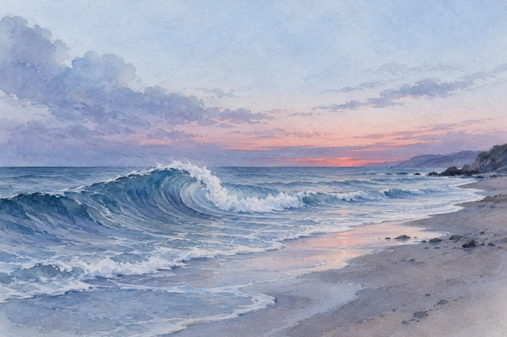

Geamătul mării
L Pelion, Grecia.
Nu geme că o dor măruntaiele
Că delfinii nu-i dau ascultare
Că din toate părțile o bat vânturile
Sau că o ustură rănile de atâta zare!
Nu geme că țărmurile, stâncile
Nu o lasă în libertatea dorită
Și-i sparg fără milă valurile
Sau că pescărușii o lasă părăsită.
Nu geme că-i este dor de ocean
Care și el e un frate de suferinți
Și că ele, caracatițele, fac în adâncimi cancan
Și că peștele de aur nici nu există.
Nu geme că e vremea rea sau bună,
Sau că vapoarele mereu o frământă
Nu geme așa de nebună
Cine are urechi s-o audă de-atâta tristețe ea cântă!
Geme când nopțile sunt fără lună,
Când oamenii la apus de soare o părăsesc
Când peste-ntinsuri nu mai are lumină
Se simte în singurătate și cei doriți nu o mai iubesc!
De singurătate se teme
Și de aceea în nopțile întunecate ea geme!
Vasile Groza
Apare și în: Privește-mă în ochi (2015), Poezii cu animale.